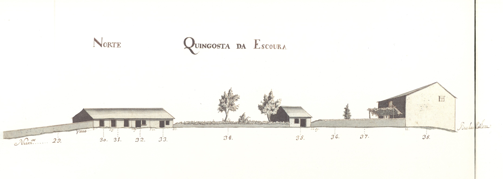

Cangosta da Escoura - vista norte.Cangosta da Escoura - vista sul.Imagem atual da RuaImagem atual da Rua
Pequena artéria, de carácter rural, estabelecia ligação entre a igreja de S. Vicente e a
igreja e convento do Carmo.
Aberta em data que desconhecemos, não está totalmente representada no Mappa; nele só vemos a metade Este, embora de ambos os lados.
Sem casas dignas de relevo, apresenta do lado Sul uma série de portas que davam acesso aos quintais das habitações da
rua dos Chãos de Cima. Aliás todo este lado era pertença das casas daquela rua, pois que até os 4 edifícios (n.ºs 8, 24, 27 e 28) nele
representados pertenciam, respectivamente, aos seus prazos n.ºs 46, 27, 23 e 22.
Do lado Norte, há apenas 5 pequenas casinhas totalmente ligadas aos campos que as envolviam: assim a casa do prazo n.ºs 30 e 31 andam emprazadas
juntamente com o campo n.º 29, e as casas 32, 33 e 35 estavam também todas subemprazadas com os quintais n.º 34 e 36 num só título.
Todas estas casas são foreiras ao cabido.
Desde 14 de Setembro de 1885 que passou a chamar-se rua Gabriel Pereira de Castro. Apesar das placas toponímicas existentes
no local competente terem gravado este nome é apenas conhecida como rua da Escoura.